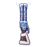

หยดหมึกแตกตัว
มอนธาตุน้ำ Lv 78–85
เจอที่
| แมพ | โซน | Lv | ภูมิภาค |
|---|---|---|---|
| หอบัญชีใต้วิหาร ชั้น 1 | 78–81 | เมืองหอระฆัง | |
| หอบัญชีใต้วิหาร ชั้น 2 · ห้องบัญชี | 82–85 | เมืองหอระฆัง | |
| หอรากมืด (Dark Root) | รากจมน้ำ | 43–52 |
ค่าสถานะตามเลเวล
| Lv | HP | ATK | DEF | MDEF | EXP | Job |
|---|---|---|---|---|---|---|
| 78 | 45,864 | 152–228 | 28 | 16 | 100 | 75 |
| 81 | 51,348 | 159–240 | 29 | 17 | 103 | 77 |
| 85 | 59,430 | 169–255 | 31 | 18 | 108 | 81 |
ตีด้วยธาตุไหนดี
แรงขึ้น: ลม ×1.75
เบาลง: ไฟ ×0.5 น้ำ ×0.25
วัตถุดิบที่ดรอป
| ของ | โอกาส | |
|---|---|---|
| ปากกาหัวเหล็กจม | 55% | 1 ชิ้น (15% ได้ 2) |
อุปกรณ์ที่ดรอป (11)
| ของ | โอกาส |
|---|---|
| 0.25% | |
| 0.12% | |
| 0.12% | |
| 0.12% | |
| 0.12% | |
 ลูกซองพายุหิมะ | 0.12% |
| 0.12% | |
| 0.12% | |
| 0.12% | |
| 0.06% | |
| 0.06% |
สกิล
แอ่ง (Lv 25+) · แอ่ง (Lv 60+) · ปาตกใส่ (Lv 60+)